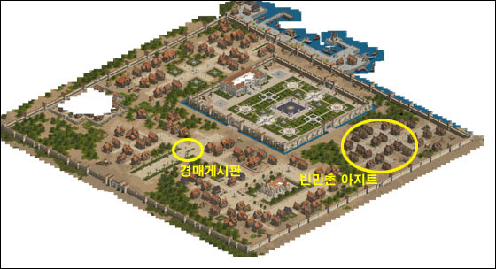

2003年2月27日 韓國測試伺服器2月27日更新內容 來源：Lineage Playforum
日本翻譯：Lineage Reporter Club 1. 加入了騎士、妖精及法師的45級任務，騎士與妖精的開始NPC為威頓村的馬沙，而法師則是象牙塔3樓的塔拉斯。
2. 調整了亞丁城堡的稅收。
3. 調整了膠質怪遠距離攻擊的範圍及強度。
4. 修正了風龍下降時的圖像錯誤。
5. 巨人會有少量機會使用遠距離攻擊（拋石頭）。
6. 調整了在傲塔之塔出現的怪物。
7. 加入了召喚控制戒指，當法師裝備了此戒指及使用召喚術時，召喚視窗將會出現，他可以在表中選擇想召喚的怪物。此戒指好像能夠在傲塔之塔中取得，召喚的怪物列表如下：
28級或以上：狼人，熊
32級或以上：蜥蝪人，萊肯
36級或以上：鼠人，巨大兵蟻
40級或以上：食人妖精，牛人
44級或以上：骷髏警衛，骷髏鬥士
48級或以上：食人妖精王，石翼鳥(Gargoyle)
52級或以上：阿魯巴，魔狼(Dire Wolf)
8. 要創立血盟必須找各村的血盟執行者，現在不能再使用/create指令創立血盟。
9. 王族加入聯盟時會有確認視窗。
10. 開始拍賣亞丁城貧民區的19間血盟小屋，可許它們的外觀不太漂亮，但它們非常接近藥水店及倉庫。 
韓國測試伺服器檔案內容 今天韓國測試伺服器有數百個檔案更新，初步估計主要與各職業的45級任務有關，新增的圖示如下： | 圖示 | 名稱 | 圖示 | 名稱 |  | 調查書的缺頁 |  | 古代之鑰 |  | 破舊的調查書 |  | 古代之輪 |  | 古代的遺產 |  | 變形怪血液 |  | 神秘的貝殼 |  | 瑪那斗蓬，防禦2，重10，布製，加強魔力回復量，法師專用 |  | 藍色苗子 |  | 古代之弓，任務道具，不能裝備 |  | 夜之視野 |  | 勇氣皮帶，防禦1，重50，皮製，體力上限+30，騎士專用 |  | 古代的惡魔記錄 |  | 天上之劍，任務道具，不能裝備 |  | 古代人之智慧？ |  | 保護者手套，防禦0，重10，皮製，體力上限+20，魔力上限+10，妖精專用 |
另外還加入了召喚列表，可能是要配合召喚控制戒指方可選擇召喚的怪物，那麼召戒會否是45級法師任務的獎勵之一？還是要打首領級怪物才會有的貴重道具呢？召喚列表的選擇內容如下： 28級或以上：狼人，熊
32級或以上：蜥蝪人，萊肯
36級或以上：鼠人，巨大兵蟻
40級或以上：食人妖精，牛人
44級或以上：骷髏警衛，骷髏鬥士
48級或以上：食人妖精王，石翼鳥(Gargoyle)
52級或以上：阿魯巴，魔狼(Dire Wolf) 在list.spr則加入了巨人石頭，綠色思克巴，高侖石頭人，盜賊及希爾黛斯的描述，相信他們都是45級任務的相關NPC，而在新圖像方面加入了風龍降下（應該是修正風龍圖檔錯誤），三種巨人拋小石頭，小石頭及黑白版的希爾黛斯圖檔，相信巨人們會加入拋小石頭的遠距離攻擊。
美國正式伺服器2月27日更新內容 原文：美國天堂官方網站 1. 修正了妖精妖精魔法生命之泉的延遲錯誤。
2. 修正了海音往遺忘之島NPC對話中的船期時間。
3. 重新分佈肯特城堡內的武器及防具強化師的位置。
4. 玩家不能再帶寵物上遺忘之島的船上。
5. 開放了王族45級任務及聯盟系統。 |